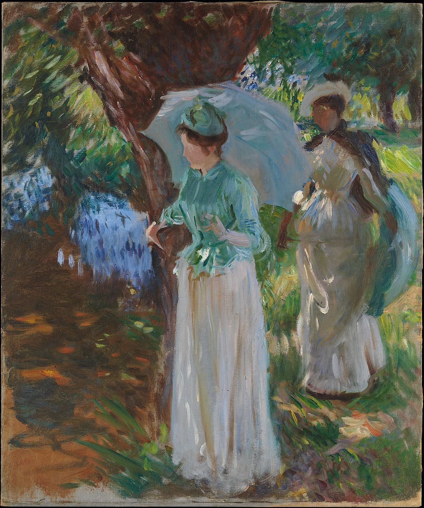

<head>
<meta charset="UTF-8" />
<meta name="keywords" content="drawing, painting" />
<meta name="description" content="drawings by Sunjy" />
<title>Sunjy</title>
<link rel="shortcut icon" type="image/x-icon" href="../../mImages/mCommon/favicon.ico" media="screen" />
<link rel="stylesheet" type="text/css" href="../../mCsses/mCommon/mCssA.css" />
<link rel="stylesheet" type="text/css" href="../../mCsses/mCommon/mCssB.css" />
<link rel="stylesheet" type="text/css" href="../../mCsses/mCommon/mCssC.css" />
<link rel="stylesheet" type="text/css" href="../../mCsses/mCommon/mCssD.css" />
<link rel="stylesheet" type="text/css" href="../../mCsses/mContent/mCssA.css" />
<link rel="stylesheet" type="text/css" href="../../mCsses/mContent/mCssB.css" />
<link rel="stylesheet" type="text/css" href="../../mCsses/mContent/mCssC.css" />
<link rel="stylesheet" type="text/css" href="../../mCsses/mContent/mCssD.css" />
</head>
<script type="text/javascript" src="../../mScripts/mContent/mContentAA.js" /></script>
<script type="text/javascript" src="../../mScripts/mContent/mContentAB.js" /></script>
<script type="text/javascript" src="../../mScripts/mContent/mContentAC.js" /></script>
<script type="text/javascript" src="../../mScripts/mContent/mContentAD.js" /></script>
<script type="text/javascript"></script> 
<script type="text/javascript">
document.write('<div class="mImgAbsolute"></div>');
/*
document.write('<p class="mFontSizeBColor" />From a white paper...</p>');
document.write('<table class="center"><tr><td>');
document.write('');
document.write('</td></tr></table>');
*/
</script>


<script type="text/javascript">
document.write('<p class="mFontSizeBColor" />Two Girls with Parasols</p>');
document.write('<p class="mFontSizeSColor" />“Two Girls with Parasols” by John Singer Sargent depicts the artist’s sister, Violet, in the foreground, and a friend walking in England’s Berkshire countryside.<br><br>In the 1880s, Sargent attended the Impressionist exhibitions, and he began to paint outdoors in the Plein-air manner after visiting Claude Monet at his home in the village of Giverny.<br><br>This painting is an unfinished canvas, which reflects Claude Monet’s influence. Sargent was inspired by the Impressionist master and purchased four Monet works for his collection.<br><br>This painting demonstrates Sargent’s spontaneous technique and brushwork in rendering figures and landscapes to capture the fleeting effects of dappled light.<br><br>After his visit to France, Sargent spent much time painting outdoors in the English countryside when not in his studio.<br><br>Sargent is usually not thought of as an Impressionist painter, but he sometimes used impressionistic techniques to significant effect.<br><br>John Singer Sargent is considered one of the leading portrait painters and is known for his evocations of the luxury of his era.<br><br>He created over 900 oil paintings and more than 2,000 watercolors, as well as multiple sketches and drawings.<br><br>He also traveled extensively across Europe, the Middle East, and the United States. Many of John Singer Sargent portraits, which can be found in museums across the world, depict society’s leading lights and the opulence of their time.<br></p>');
document.write('<table class="center" /><tr><td>');
document.write('<br>In the 1880s, Sargent attended the Impressionist exhibitions, and he began to paint outdoors in the Plein-air manner after visiting Claude Monet at his home in the village of Giverny.<br><br>This painting is an unfinished canvas, which reflects Claude Monet’s influence. Sargent was inspired by the Impressionist master and purchased four Monet works for his collection.<br><br>This painting demonstrates Sargent’s spontaneous technique and brushwork in rendering figures and landscapes to capture the fleeting effects of dappled light.<br><br>After his visit to France, Sargent spent much time painting outdoors in the English countryside when not in his studio.<br><br>Sargent is usually not thought of as an Impressionist painter, but he sometimes used impressionistic techniques to significant effect.<br><br>John Singer Sargent is considered one of the leading portrait painters and is known for his evocations of the luxury of his era.<br><br>He created over 900 oil paintings and more than 2,000 watercolors, as well as multiple sketches and drawings.<br><br>He also traveled extensively across Europe, the Middle East, and the United States. Many of John Singer Sargent portraits, which can be found in museums across the world, depict society’s leading lights and the opulence of their time.<br>" />');
document.write('</td></tr></table>');
</script>


